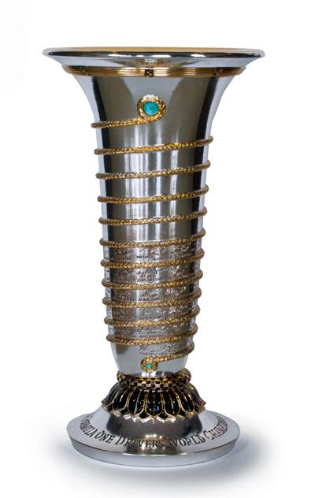

Michael Schumacher is a German former racing driver who competed in Formula One for Jordan, Benetton, Ferrari, and Mercedes. Schumacher has a joint-record seven World Drivers' Championship titles (tied with Lewis Hamilton); at the time of his retirement from the sport in 2012, he also held the records for the most wins (91), pole positions (68), and podium finishes (155)—which have since been broken by Hamilton—while he maintains the record for consecutive Drivers' Championships and number of total fastest laps (77), among others.
7
Formula 1 World Championships
